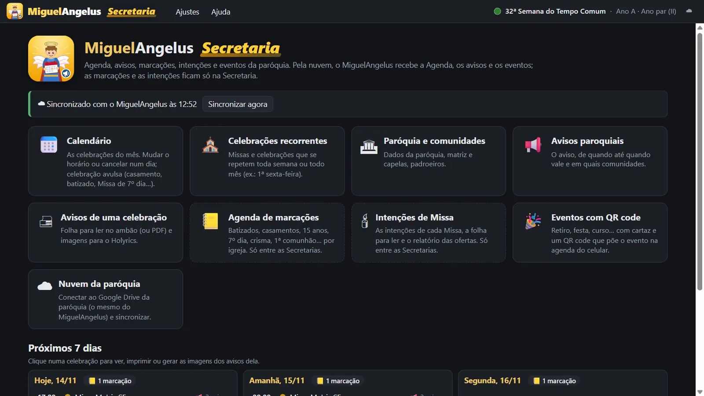
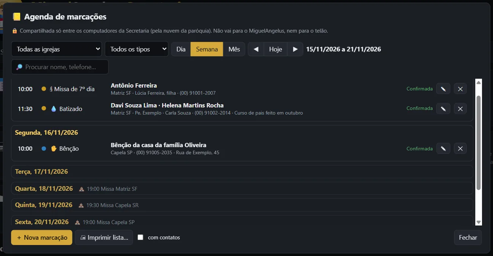
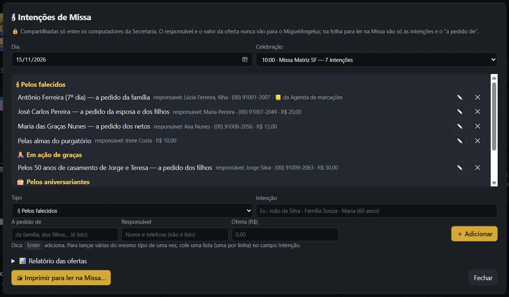
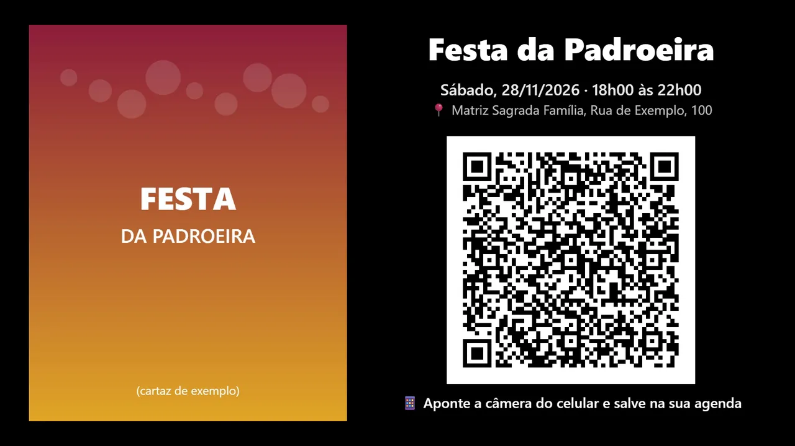
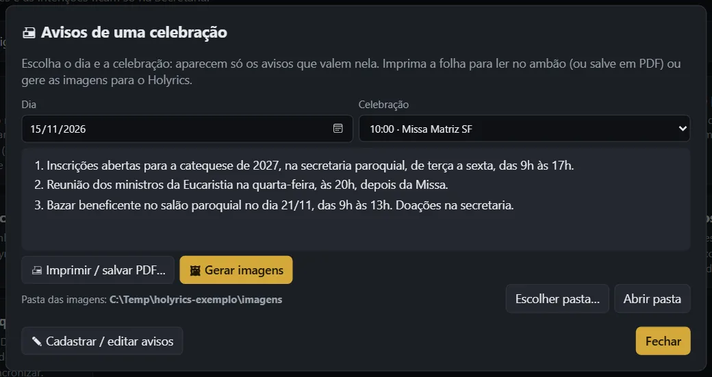

Secretaria MiguelAngelus
Um programa gratuito para a secretaria paroquial: a agenda das celebrações, os avisos, as marcações de batizados e casamentos, as intenções de Missa e os eventos da paróquia. O que é para o telão chega sozinho ao MiguelAngelus da projeção, pela nuvem da própria paróquia.
Windows 10 e 11 · instalador assinado digitalmente · as próximas versões chegam sozinhas pelo próprio programa. Não precisa do MiguelAngelus no mesmo computador.

O que ela faz
📅 Agenda da paróquia
A matriz e as capelas, as celebrações de toda semana e as do dia. É a mesma Agenda do MiguelAngelus: o que a secretaria muda aparece na projeção.
📢 Avisos paroquiais
Cada aviso com data de início e de fim, para uma, várias ou todas as comunidades. Para cada Missa, a folha A4 para ler no ambão e as imagens Full HD para o Holyrics.
📒 Marcações
Batizados, casamentos, 15 anos, 7º dia, crismas, 1ª comunhão e bênçãos, por igreja. Dia, semana e mês, busca, aviso de choque de horário e lista para imprimir.
🕯 Intenções de Missa
Por celebração, agrupadas por tipo. "A pedido de" é lido na Missa; quem pediu e fez a oferta fica só na secretaria. Folha para o ambão, sem valores, e relatório de ofertas.
🎉 Eventos com QR code
Festas, retiros e cursos com cartaz. O QR code põe o evento na agenda do celular, sem internet. Sai a imagem para o telão e o cartaz A4 para o mural.
☁ Uma ou várias secretarias
Com o Google Drive da paróquia, duas secretarias (ou a matriz e uma capela) trabalham juntas. Se as duas mexem no mesmo item, o programa pergunta antes de salvar.
Do balcão da secretaria ao telão
Telas com uma paróquia de exemplo: os nomes das pessoas são fictícios.




🎉 Os eventos no MiguelAngelus
Os eventos cadastrados na secretaria aparecem na aba Eventos do MiguelAngelus (a partir da versão 1.9). No roteiro, Apresentar eventos passa os cartazes sozinho, com o tempo de cada um, e pode ter uma música de fundo. Antes da Missa, um vídeo da paróquia e a apresentação dos eventos podem se repetir em grupo, sem ninguém mexer no computador.
🔒 Os dados das pessoas ficam na secretaria
Nomes, telefones, marcações e ofertas ficam no computador da secretaria e, se a paróquia ligar a nuvem, no Google Drive da própria paróquia. Eles não vão para o MiguelAngelus da projeção, para o telão, para o site nem para nós: o MiguelAngelus recebe só a Agenda, os avisos e os eventos. A folha do ambão sai só com o que é lido na Missa. Veja a política de privacidade.
▶ Aprenda em vídeos curtos
Uma série de vídeos de 2 a 3 minutos mostra cada parte da Secretaria, no canal do MiguelAngelus no YouTube.
Como instalar
- Baixe o instalador (Instalar-Secretaria-MiguelAngelus.exe).
- Abra o arquivo e siga o instalador. Ele é assinado digitalmente por Open Source Developer Marcio Aurelio Rios Martins.
- Abra a Secretaria MiguelAngelus pelo ícone e veja Ajuda → Como usar (tecla F1).
- Para ligar à projeção: em Ajustes → Nuvem, entre com a mesma conta do Google usada no MiguelAngelus da paróquia.
Precisa de Windows 10 ou 11 (64 bits). O código é aberto (licença MIT): github.com/dobylucky78-droid/secretaria-miguelangelus. Dúvidas ou ideias: contato.miguelangelus@gmail.com